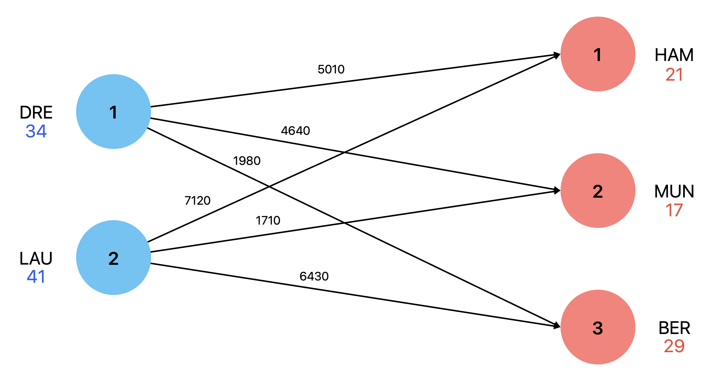

print("Hello World!")Hello World!Applied Optimization with Julia
. . .
I really appreciate active participation and interaction!
. . .
Bonus points only count if the mark is at least 4.0!
. . .
We are also happy to supervise Bachelor and Master theses!

. . .
Question: Have you ever heard of Julia?
. . .
Allows for fast data workflows, particularly in scientific computing!
. . .
JuMP is an alternative to Pyomo, GAMS, and AMPL!
. . .
. . .
Modeling is a creative process!
. . .
We will go through these components step by step in each lecture!
\[ \begin{aligned} &\text{maximize} \quad F = \sum_{j\in \mathcal{J}} c_j \times X_j \end{aligned} \]
subject to
\[ \begin{aligned} &\sum_{j\in \mathcal{J}} a_{i,j} \times X_j \le b_i && \forall i \in \mathcal{I} \\ &X_j \ge 0 && \forall j \in \mathcal{J} \end{aligned} \]
\[ \begin{aligned} \mathcal{I} &: \text{set of $i \in \mathcal{I}$,}\\ \mathcal{J} &: \text{set of $j \in \mathcal{J}$,}\\ F &: \text{Objective function variable,}\\ X_{j} &: \text{decision variables,}\\ c_{j} &: \text{objective function coefficients,}\\ a_{i,j} &: \text{parameters,}\\ b_{i} &: \text{parameters} \end{aligned} \]
. . .
Question: Have you ever seen something like this before?
A company is producing solar panels in Dresden and Laupheim and has to transport them to new solar farms near Hamburg, Munich, and Berlin. The quantities offered and demanded (truckloads) and the transport costs per truckload in Euro are summarized in the following table.
| Origin/Destination | Hamburg | Munich | Berlin | Available |
|---|---|---|---|---|
| Dresden | 5010 | 4640 | 1980 | 34 |
| Laupheim | 7120 | 1710 | 6430 | 41 |
| Demand | 21 | 17 | 29 |
Example: A truckload from Dresden \(i=1\) to Munich \(j=2\) costs \(c_{12}=4640\) Euro. Moreover, it is necessary to fulfil all customer demands, as the contract has been signed.

First, we always need to understand the objectives.
. . .
Question: What are our possible objectives?
Minimizing the transport costs over all truckloads while meeting the demand based on the available solar panels adhering to the available panels.
Remember, sets are collections of elements
. . .
Question: What sets are needed?
. . .
\[ \begin{aligned} \mathcal{I} &: \text{Set of production sites, indexed by } i \text{ with } i \in \{1, \ldots, |\mathcal{I}|\}, \\ \mathcal{J} &: \text{Set of customers, indexed by } j \text{ with } j \in \{1, \ldots, |\mathcal{J}|\}. \end{aligned} \]
. . .
We often use plural names for sets and a caligraphic letter, e.g., \(\mathcal{I}\) and \(\mathcal{J}\).
Parameters are fixed values that are given.
. . .
Question: What parameters are needed?
. . .
\[ \begin{aligned} c_{i,j} &: \text{Costs per truck load for transport from } i \text{ to } j, \\ a_i &: \text{Available truck loads at } i, \\ b_j &: \text{Customer demands at } j. \end{aligned} \]
. . .
We usually use the corresponding lower-case letter, e.g., \(c\), \(a\), and \(b\).
. . .
Question: What decision variables are needed?
. . .
\[ X_{i,j} \text{Trucks that deliver panels from site } i \text{ to customer } j. \]
. . .
We use upper-case letters to distinguish variables from parameters, e.g., \(X\).
. . .
Question: Do you remember the objective?
Minimize the transport costs over all truckloads while meeting the demand based on the available solar panels adhering to the available panels.
. . .
Question: How can we write this down?
. . .
\[ \text{Minimize} \quad \sum_{i \in \mathcal{I}} \sum_{j \in \mathcal{J}} c_{i,j} \times X_{i,j} \]
Question: Objective value without any constraints?
. . .
. . .
Question: What constraints are needed?
Ensure that the number of panels transported from a location does not exceed the available panels.
. . .
Question: How can we formalize this?
. . .
\[ \sum_{j \in \mathcal{J}} X_{i,j} \leq a_i \quad \forall i \in \mathcal{I} \]
Ensure that the demand of each customer is covered.
. . .
Question: Any ideas?
. . .
\[ \sum_{i \in \mathcal{I}} X_{i,j} = b_j \quad \forall j \in \mathcal{J} \]
Ensure no negative number of truckloads are transported.
. . .
Question: Has anyone an idea how to write this down?
. . .
\[ X_{i,j} \geq 0 \quad \forall i \in \mathcal{I}, \forall j \in \mathcal{J} \]
The complete model can then be written as:
\[ \begin{aligned} \text{Minimize} \quad F &= \sum_{i \in \mathcal{I}} \sum_{j \in \mathcal{J}} c_{i,j} \times X_{ij} \\ \text{subject to:} \quad &\sum_{j \in \mathcal{J}} X_{i,j} \leq a_i \quad &&\forall i \in \mathcal{I} \\ &\sum_{i \in \mathcal{I}} X_{i,j} = b_j \quad &&\forall j \in \mathcal{J} \\ &X_{i,j} \geq 0 \quad &&\forall i \in \mathcal{I}, \forall j \in \mathcal{J} \end{aligned} \]
Question: Could we replace \(=\) by \(\geq\) in the demand constraint?
. . .
. . .
Question: Why won’t we transport more than the demand?
Unfortunately, the margins on solar panels are low. After the previous contract has been fulfilled, the company produced the same number of panels as before. In addition, all three customers want to order the same number of truckloads with solar panels again. The sales volume per truckload of panels is 11,000 Euros. The complete production of a truckload of solar panels, including materials, costs 6,300 Euros.
In the new contract, the company wants to maximize its profits while the demand does not have to be fulfilled.
. . .
Question: What changes are necessary?
. . .
. . .
Question: Does our decision variable change?
. . .
\[ \begin{aligned} p &: \text{Sales volume per truckload of solar panels,} \\ c &: \text{Production costs per truckload of solar panels.} \end{aligned} \]
. . .
Question: What is the profit per truckload of solar panels?
. . .
\[ p - c \]
\[ \begin{aligned} \text{Minimize} \quad F &= \sum_{i \in \mathcal{I}} \sum_{j \in \mathcal{J}} c_{i,j} \times X_{i,j} \\ \text{subject to:} \quad &\sum_{j \in \mathcal{J}} X_{i,j} \leq a_i \quad &&\forall i \in \mathcal{I} \\ &\sum_{i \in \mathcal{I}} X_{i,j} \geq b_j \quad &&\forall j \in \mathcal{J} \\ &X_{i,j} \geq 0 \quad &&\forall i \in \mathcal{I}, \forall j \in \mathcal{J} \end{aligned} \]
\[ \begin{aligned} \text{Maximize} \quad F &= \sum_{i \in \mathcal{I}} \sum_{j \in \mathcal{J}} (p-c-c_{i,j}) \times X_{i,j} \\ \text{subject to:} \quad &\sum_{j \in \mathcal{J}} X_{i,j} \leq a_i \quad &&\forall i \in \mathcal{I} \\ &\sum_{i \in \mathcal{I}} X_{i,j} \leq b_j \quad &&\forall j \in \mathcal{J} \\ &X_{i,j} \geq 0 \quad &&\forall i \in \mathcal{I}, \forall j \in \mathcal{J} \end{aligned} \]
To prepare for the upcoming lectures, we start by installing the Julia Programming Language and an Integrated Development Environment (IDE) to work with Julia.

If you are ever asked to add something to your “PATH”, do so!

print("Hello World!")Hello World!Hello World! → perfect!Don’t worry if it is not running right away. We will fix this together!
And that’s it for todays lecture!
We now have covered a first introduction and are ready to start solving some problems in the upcoming lectures.
For more interesting literature to learn more about Julia, take a look at the literature list of this course.